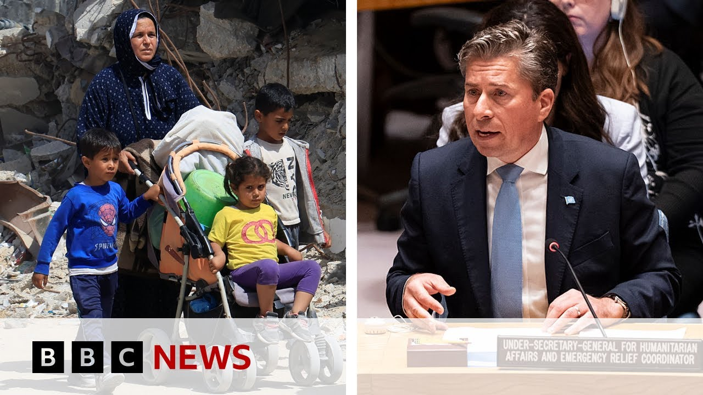

【联合国负责人称，若无援助加沙数千婴儿或在未来48小时内死亡 | BBC新闻 】
Summary: The UN warns that 14,000 babies in Gaza may die within 48 hours without urgent aid, as Israel’s blockade restricts humanitarian deliveries. Despite limited truck access, the UN demands immediate large-scale aid entry to prevent starvation and uphold humanitarian principles, rejecting Israel’s proposed distribution mechanism.
摘要： 联合国警告称，若无紧急援助，加沙1.4万名婴儿可能在48小时内死亡。以色列的封锁限制了人道主义物资运送。尽管少量卡车获准入内，联合国仍要求立即大规模开放援助通道以避免饥荒，并拒绝以色列提出的新分配机制。

⏱️ Estimated Reading Time: 14 min
We begin with a stark warning from the United Nations humanitarian chief Tom Fletcher, who has told the BBC that 14,000 babies could die in Gaza within the next 2 days unless aid reaches them.
我们首先听到联合国人道主义负责人汤姆·弗莱彻的严厉警告，他告诉BBC，若无援助送达，加沙1.4万名婴儿可能在未来两天内死亡。
Israel began a blockade of Gaza 11 weeks ago.
以色列11周前开始对加沙实施封锁。
On Monday, it began to ease it, but witnesses saying just five trucks crossed into the territory.
周一封锁略有放松，但目击者称仅5辆卡车进入该地区。
The UN says that is a drop in the ocean.
联合国称这只是杯水车薪。
It has been given permission for as many as a 100 trucks to cross into Gaza today.
今日联合国获准最多100辆卡车进入加沙。
We have some pictures that uh can show you some of those trucks moving through the checkpoints in the last few hours.
我们有一些画面可展示过去几小时这些卡车通过检查站的情况。
But according to Tom Fletcher, unless that aid delivery operation is significantly and immediately increased, thousands of lives in Gaza are at risk.
但汤姆·弗莱彻表示，除非援助行动立即大幅增加，否则加沙数千人生命危在旦夕。
He's been speaking to my colleague Anna Foster.
他接受了我的同事安娜·福斯特的采访。
Well, these are robust words uh and it's welcome.
这些强有力的表态令人欣慰。
I mean, there's clearly a dialing up of the collective international position uh because the situation is dire.
显然国际社会正加强共同立场，因局势严峻。
The real test of the words will be whether we can get that aid in.
真正的考验在于能否将援助送入。
We are there on the border right now.
我们此刻就在边境。
We have thousands of trucks ready to go.
数千辆卡车整装待发。
We know how to do this.
我们深知如何操作。
We've done it before and we are demanding that the world back us in pushing Israel to let us get in and and reach those people who are starving right now.
我们有过经验，现呼吁国际社会支持我们施压以色列放行，以救助正在挨饿的人们。
And yesterday it was five five trucks of aid that went in.
昨日仅有5辆援助卡车进入。
Um not fit for for purpose in this case.
这远远不够。
No, that's a drop in the ocean.
简直是沧海一粟。
And and let's be clear, those five trucks are just sat on the other side of the border right now.
需明确的是，这5辆卡车目前仅停在边境另一侧。
They've not reached the communities they need to reach.
尚未送达急需的社区。
And you know, let me describe what is on those trucks.
请容我说明卡车所载物资。
This is baby food, baby nutrition.
这是婴儿食品与营养品。
There are 14,000 babies that will die in the next 48 hours unless we can reach them.
若无援助送达，1.4万名婴儿将在48小时内死亡。
This is not food that Hamas are going to steal.
这些并非哈马斯会窃取的物资。
No, we run the risk of looting.
但我们面临抢劫风险。
We run the risks of uh being hit as part of the Israeli military offensive.
我们可能遭以军袭击。
We run all sorts of risks trying to get that baby food through to those mothers who cannot feed their children right now because they're malnourished.
为将婴儿食品送给无法喂养孩子的营养不良母亲，我们承担着一切风险。
You've spoken out already about the new Gaza Humanitarian Foundation, essentially the mechanism that Israel wants to bring in to distribute aid to get it into the strip and to get it to people once they once it's there.
你已批评以色列提议的“加沙人道主义基金会”新分配机制。
Humanitarian organizations and you you say that the what you have in place already works perfectly well.
人道组织与你方认为现有机制运作良好。
So when that UN aid is requested by this new distribution mechanism, you're left with a a really difficult and delicate decision to make about whether to hand it over.
若新机制要求接管联合国援助，你们将面临艰难抉择。
What will you do?
你们会怎么做？
We've got to keep on getting as much aid through our mechanism as we can.
我们必须通过现有机制运送尽可能多援助。
We can do this at scale.
我们具备大规模行动能力。
We did it during the ceasefire, 42 days, 600 trucks, 700 trucks, dwarfing anything they're talking about doing through this uh dodgy modality.
停火期间42天内我们运送了600至700辆卡车物资，远超新机制所提规模。
We we know how to do this.
我们深知如何运作。
We can do it in line with humanitarian principles and the world the international community and the donors who provided that aid are very very clear with us that this is the only way to do it to go with the other modality would actually be to support the uh objectives of the military offensive and to further dehumanize and humiliate those civilians who badly need that aid.
我们遵循人道原则，国际社会与捐助方明确表示这是唯一可行方式，采用其他机制将助长军事攻势目标并进一步羞辱亟需援助的平民。
So you won't be handing over as the UN you won't be handing over that aid to this new mechanism to be distributed through them.
因此联合国不会将援助移交新机制分配。
We've got to get the aid in ourselves.
我们必须自行运送援助。
You know, we've got we reckon clearance for 100 or so trucks to go through today.
今日我们预计有约100辆卡车获准进入。
I hope.
但愿如此。
Now, it will be very tough.
这将非常艰难。
We get uh impeded at every point, but we'll load those up with that baby food.
我们处处受阻，但仍将装载婴儿食品。
And our people will run those risks.
工作人员愿冒这些风险。
I've been talking to them this morning.
今早我与他们交谈。
They are incredibly courageous.
他们无比勇敢。
They know what's lying ahead of them.
清楚前方危险。
Looting, insecurity, the war overhead, the war all around them.
抢劫、动荡、头顶与四周的战争。
But people inside Gaza are so desperate right now and we will do whatever we can to get to them.
但加沙民众绝望至极，我们将竭尽全力援助。
That looting and insecurity that that is the reason that Israel has given for trying to change the mechanism.
以色列以抢劫与动荡为由试图改变机制。
I just wonder looking ahead, Israel has made it clear that they only want this new mechanism to be used to distribute aid.
展望未来，以色列明确只愿通过新机制分配援助。
So potentially we are in a situation where as you say there is thousands of trucks, thousands of tons of aid waiting to be used and it might not get there if you if you won't give it to the new mechanism.
若你们拒绝移交新机制，数千卡车、万吨援助或无法送达。
What would you do in that situation?
届时你们将如何应对？
We are insisting and we'll carry on insisting with all our partners and you've heard those strong voices raised across the international community that we have unimpeded aid in line with humanitarian principles.
我们坚持并与合作伙伴共同要求——正如国际社会强烈呼声——依据人道原则畅通援助。
We know how to do this.
我们深谙此道。
We've got the people inside.
我们在当地有人手。
you know, we know how to stop Hamas getting anywhere near this aid and making sure it gets to the civilians who so badly need it.
我们确保哈马斯无法染指援助，将其送给亟需的平民。
There isn't an alternative to that and so we'll keep trying and I think you'll hear those voices very very clear across the international community in support of what we're doing.
别无他法，我们将继续努力，国际社会的支持声浪也将愈发清晰。
You talked about the need to prevent genocide in Gaza and obviously your your use of that word as a member of the UN has attracted attention.
你提及需防止加沙种族灭绝，作为联合国官员使用该词引发关注。
Have you had any push back about your I presume well-informed choice to use that word?
是否有人对你深思熟虑后使用该词提出异议？
Well, I did pick my words very carefully in the security council and and weighed weighed with great thought uh and care uh what I should say.
我在安理会措辞谨慎，深思熟虑。
I felt that we needed to jolt the international community.
认为需震动国际社会。
We needed this wakeup call.
这是一记警钟。
Uh people can see what's going on, but we as humanitarians because we're on the ground, we've got the most informed view.
民众可见现状，但作为一线人道工作者，我们掌握最全面信息。
We're there every day.
我们每日在场。
And of course, this is a crisis that that as journalists, you can't get in to cover.
而记者无法进入报道这场危机。
So, we know what's going on.
因此我们了解实情。
And I felt it was important to to drive that home to the Security Council.
认为必须向安理会强调这一点。
You know, I'm not I'm not a lawyer.
我并非律师。
You know, it's for the lawyers and the the politicians over time to decide what this has been.
需由律师与政客长期定性。
But I'm very conscious that with previous war crimes, Subnica, Rwanda, etc., we didn't move fast enough to call on the world to prevent it.
但我深知，面对斯雷布雷尼察、卢旺达等战争罪行，我们未能及时呼吁国际社会阻止。
and I'm I'm doing everything I can to raise my voice and encourage others to raise their voice to prevent that.
现正全力发声并鼓励他人共同防止悲剧重演。
So on that point, looping back to that statement that we were talking about, um it talks about if Israel doesn't cease the renewed military offensive and lift its restrictions on humanitarian aid, we'll take further concrete actions in response.
回到先前声明，其中提到若以色列不停止军事攻势并解除援助限制，国际社会将采取进一步具体行动。
In your opinion, what do those actions need to be and how soon do they need to happen if there is no change in the situation?
你认为若无改变，需采取何种行动及何时实施？
Well, I think the challenge here is that it's it doesn't really matter what I say.
关键在于我的言论无足轻重。
It it really matters what Israeli ministers uh are saying and several of them very prominent ministers are clear that they want to use starvation as a weapon of war and that they will do everything possible to prevent us getting that aid in to save lives.
以色列多位部长明确表示欲将饥荒作为战争武器，并竭力阻挠救命援助。
So, I think you're seeing that clear ratcheting up from those countries uh and beyond those countries.
因此相关国家乃至国际社会正明显加大施压。
You know, incredibly strong statements in the last few days.
近日声明异常强硬。
You'd have to ask them what they might do next.
需由他们说明下一步行动。
There's a big conference coming up at the end of June at which several countries may recognize a Palestinian state.
六月底将召开大型会议，多国或承认巴勒斯坦国。
Several countries have trade deals.
一些国家握有贸易协议。
Some countries are still providing arms uh to this uh Israeli military offensive.
部分国家仍在向以军攻势提供武器。
So, they do have a toolkit of measures that they could take.
他们确有措施可选。
For me, right now, what I most need them to do is insist unequivocally that we get in at scale.
对我而言，当前最需他们明确要求大规模开放援助通道。
I want to get thousands and thousands of trucks through.
我期望成千上万辆卡车进入。
I want to save as many of these 14,000 babies as we can in the next 48 hours.
未来48小时尽可能拯救1.4万名婴儿。
UN's humanitarian chief Tom Fletcher speaking to Anna Foster there and he was talking about the thousands of babies that he is worried about in Gaza that could die in the next few days if aid doesn't reach them.
联合国人道主义负责人汤姆·弗莱彻向安娜·福斯特讲述了他对加沙数千婴儿的担忧——若援助未达，他们或于近日死亡。
I've been speaking to Amal Allah Bladla.
我采访了阿迈勒·阿拉·布拉德拉。
She's a mother in Gaza.
她是加沙一位母亲。
She gave birth to one of her sons on October the 7th.
她在10月7日生下儿子。
For months, she searched for baby formula.
数月来她寻找婴儿配方奶粉。
She even sent her brothers into the rubble of demolished buildings to try and find it.
甚至让兄弟在废墟中搜寻。
And they've come back empty-handed.
却空手而归。
Eventually, she gave up, but she did find a mother who was able to breastfeed him.
最终她放弃，但找到一位哺乳期母亲帮忙喂养。
She joined me a short time ago from Gaza and told me what life is like for them today.
她刚从加沙与我连线，讲述如今的生活。
A day by day, my kids are getting thin and tired.
孩子们日渐消瘦疲惫。
They are not uh playing like normal boys because most of the time we are skipping meals.
无法像正常男孩玩耍，因常挨饿。
But two meals a day we skip.
每日两餐常被跳过。
Uh sometimes we just stick to one meal for both of them.
有时两人共食一餐。
We know that your baby Muhammad was born on October the 7th.
得知你的孩子穆罕默德生于10月7日。
What a life little Muhammad has had so far.
他至今的生活何其艰难。
When you look back, how would you describe the life that your baby has had?
回顾过往，如何描述他的生活？
I believe that their childhood have been sown from them because they have never lived like any normal child in the world.
我认为他们的童年被剥夺，从未像正常孩子般生活。
They missing like minimum um things for them like food and to sleep in cal to to find safety and they he haven't lived any any good day at
他们缺乏最基本需求——食物、安稳睡眠与安全，未曾有过一天好日子。